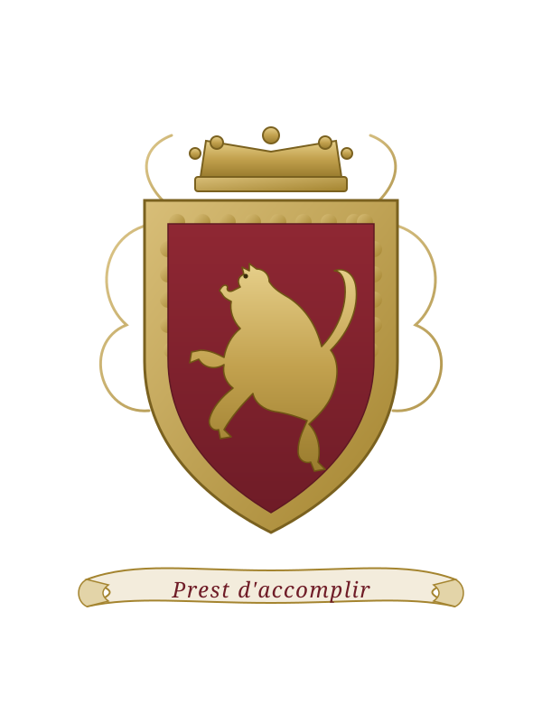

Commander Sir Gerald Francis Talbot was a sailor who never had a conventional naval career, a diplomat who never joined the Foreign Office, and a man whose single most consequential act was carried out quietly, in secret, and on someone else’s behalf. In December 1922 he walked into a capital city ruled by a revolutionary tribunal that had just shot six former ministers, and he walked out again with a prince of Greece — and that prince’s eighteen-month-old son, the future Prince Philip, Duke of Edinburgh. For this he was knighted by King George V within a fortnight. He then all but vanished from the public record for the remaining twenty-three years of his life.
He was a member of one of England’s most storied families, the Talbots, cousins to the Earls of Shrewsbury and descended — through a younger branch — from the medieval warrior John Talbot, “the English Achilles.” He spoke the language of European drawing-rooms and revolutionary committees alike. Contemporaries called him a spy; the truth is more interesting and more precise. This dossier sets out what can be firmly established about his life, distinguishes it from family legend, and follows his bloodline both back to the fifteenth century and forward to the present generation.
| Full name & style | Commander Sir Gerald Francis Talbot, K.C.V.O., C.M.G., O.B.E., R.N.V.R. |
| Born | 21 August 1881 (England; exact parish not yet confirmed) |
| Died | 17 April 1945, aged 63 |
| Family | Chetwynd-Talbot — cadet branch of the Earls of Shrewsbury / Earls Talbot of Ingestre |
| Service | Royal Naval Volunteer Reserve; Acting Commander from 23 Aug 1917 |
| Principal post | Naval Attaché to H.M. Legation, Athens (from 1917) |
| Famous for | The secret rescue of Prince Andrew of Greece & Denmark, December 1922 |
| Honours | O.B.E. (1919) · C.M.G. (1920) · K.C.V.O. (14 Dec 1922) |
| Wife | Hélène Jarislowsky (m. 15 June 1920; d. 1975) |
| Child | Isobel Helen Henrietta Talbot (b. 1923) |
| Relationship to you | Great-grandfather of Edward Hawke |
To understand Gerald Talbot, begin with his name. The Talbots are among the oldest surviving aristocratic houses in England, traceable in the records to a Norman tenant in the Domesday Book of 1086. Over the following centuries the family produced barons, earls, a Lord High Chancellor, and one of the most celebrated soldiers of the Middle Ages. Gerald belonged to a younger — or “cadet” — branch of this house: not in line for the great titles, but unquestionably of the blood.
The towering figure of the family is John Talbot, 1st Earl of Shrewsbury (c. 1387–1453), the dominant English commander of the closing decades of the Hundred Years’ War. So feared was he in France that he was nicknamed “the English Achilles,” and Shakespeare gave him a hero’s death in Henry VI, Part 1. He was in fact killed in the field at the Battle of Castillon on 17 July 1453 — the last great battle of the war — with his son dying at his side. From this man, through a documented chain of generations, Gerald Talbot was descended.
In 1856 the senior line of this same family, under Gerald’s great-great-uncle Henry John Chetwynd-Talbot, inherited the premier earldom of England and became the 18th Earl of Shrewsbury — reuniting the names of Talbot and Shrewsbury. Gerald was therefore a cousin of the Earls of Shrewsbury; the present (22nd) Earl is his fourth cousin. The family seats were the great Staffordshire houses of Ingestre Hall — where Gerald’s grandfather and father were both born — and Alton Towers, today better known as a pleasure-ground than a peer’s palace.
The descent below is firmly documented from the seventeenth century onward, and well-attested across the major peerage references for the medieval generations. One link — a sixteenth-century step around “John of Salwarpe” — rests on genealogical compilations rather than original documents, and is flagged accordingly.
Gerald’s blood was not only English. His paternal grandmother by marriage aside, it was his own mother who brought a transatlantic strain into the family: Henrietta Clarissa Noyes Bradhurst, of the old New York Bradhurst family. The Bradhursts held a 110-acre Manhattan estate, “Pinehurst,” in what is now Washington Heights and Harlem; Bradhurst Avenue in Harlem still carries their name. Henrietta’s great-great-grandfather, Dr Samuel Bradhurst, was a surgeon in the American Revolution and a friend and neighbour of Alexander Hamilton, to whom he sold the land for Hamilton’s house, the Grange, in 1799.
The Talbot achievement blazons as Gules, a lion rampant within a bordure engrailed Or — a gold lion on a red field, ringed by a scalloped gold border. The arms are, fittingly for so old a house, a marriage trophy: they were originally the arms of Gwenllian ferch Rhys Mechyll, daughter of a thirteenth-century Welsh prince, whom a Talbot married around 1274. Two white talbot hounds — the heavy-jowled hunting dog to which the family gave (or from which it took) its name — support the shield, and the motto reads Prest d’accomplir: “Ready to accomplish.”
Gerald Francis Talbot was born on 21 August 1881, the fifth of six children of Lieutenant-Colonel Gerald Francis Talbot (1848–1904) and his American wife, Henrietta Bradhurst. His was a household steeped in soldiering and in the wider continent: remarkably, his father had served as a young officer in the 2nd Prussian Dragoon Guards and had written a study of the organisation of the Prussian army before returning to England to become a Staffordshire yeomanry colonel, a Lieutenant of the City of London, and a Justice of the Peace for Essex and Kent.
The decades between Gerald’s birth and the First World War are, frustratingly, the least documented of his life. His schooling and any university are not yet established, and — tellingly — he held a commission not in the regular Royal Navy but in the Royal Naval Volunteer Reserve, the branch through which civilians, businessmen and men of independent means came to wartime service. This strongly implies a civilian career before 1914: most likely in commerce, finance, or some occupation that took him abroad.
One clue points firmly toward Greece. A modern scholarly biography of the Greek statesman Eleftherios Venizelos describes Talbot, at the moment of his 1917 appointment, as “a convinced Venizelist from some years back.” A British naval officer is not normally a partisan of a particular Greek political faction unless he has spent real time among Greeks. The likeliest reading is that Gerald had personal or business ties to Greece and the Eastern Mediterranean well before the war — ties that, in 1917, made him exactly the right man for Athens.
By 23 August 1917 Gerald was an Acting Commander, R.N.V.R., taking up the post of Naval Attaché at the British Legation in Athens. He arrived at a moment of high drama: Greece, riven by the “National Schism,” had just seen its pro-German king forced out and had entered the war on the Allied side. For his work over the following two years he was appointed to the Order of the British Empire (O.B.E.), gazetted on 27 May 1919, “for valuable services as Naval Attaché in Greece.” In early 1919 he travelled to the Paris Peace Conference in Venizelos’s company, acting as a trusted go-between linking the Greek delegation and the British. A further honour, the C.M.G., followed in 1920.
Gerald Talbot has come down through family memory, and through the few histories that mention him, as a spy. It is worth being precise about what that means, because the precise truth is more credible — and more impressive — than the legend. The honest verdict of this research is that Talbot was not, on the available evidence, a card-carrying officer of the Secret Intelligence Service; he was something subtler: an intelligence-saturated diplomat who, when it mattered, conducted a genuine covert operation.
And yet: Talbot does not appear, by name, as an SIS officer in the principal published histories of British intelligence, nor in Compton Mackenzie’s detailed Athens memoirs. His volunteer-reserve rank fits a well-connected amateur brought in for regional expertise rather than a career intelligence professional. The most accurate description is therefore something like “an intelligence-adjacent diplomat with genuine covert-operation experience” — a man the British state reached for precisely because he could do quietly what official channels could not.
In the autumn of 1922 the Greek world fell apart. The Greek army had been annihilated in Asia Minor; Smyrna had burned; and a revolutionary committee of colonels, led by Nikolaos Plastiras and Stylianos Gonatas, had seized power and forced the king to abdicate. They wanted someone to blame. On 28 November 1922, after a show trial, they shot six former royalist ministers and a general by firing squad — an act the British government denounced as “judicial murder.” And waiting in a prison cell, expecting to be next, was Prince Andrew of Greece and Denmark, a serving army corps commander, son of one king and brother of another — and father of an eighteen-month-old boy named Philip.
News of Andrew’s danger reached London and, crucially, reached King George V. The King was haunted by a recent failure: in 1917 he had withdrawn an offer of asylum to his cousin Tsar Nicholas II, who was murdered with his family the following year. As his biographer put it, the King “didn’t want any more blood on his hands.” He pressed his ministers to act. The Foreign Secretary, Lord Curzon, and Venizelos — then at the Lausanne Conference — settled on the one man who combined personal friendship with the revolutionaries’ circle, fluent knowledge of Athens, and the discretion to act unofficially: his old friend, the former Naval Attaché, Gerald Talbot.
Talbot reached Athens on 30 November 1922 — two days too late to save the six. His task now was to ensure there would be no seventh. Working in the “utmost secrecy,” he negotiated directly with the revolutionary leadership — Plastiras, Gonatas, Pangalos and the acting foreign minister Rentis. He extracted a precise, choreographed bargain: Andrew would be tried, found guilty, sentenced to banishment rather than death, and then immediately pardoned and handed into Talbot’s personal custody for removal from the country.
It unfolded exactly as arranged. At the court-martial of 1–3 December 1922, the prince — charged with disobeying an order during the catastrophic Battle of the Sakarya the previous year — was found guilty, stripped of his rank, and condemned to perpetual banishment. Plastiras granted the promised pardon. Andrew was free, and he was Talbot’s.
That night the prince was taken down to Phaleron Bay and aboard the British light cruiser HMS Calypso, under Captain Herbert Arthur Buchanan-Wollaston, where Princess Alice was waiting. The cruiser sailed for Corfu to collect the couple’s five children. The youngest, Prince Philip, not yet two, was carried aboard in a cot the ship’s crew improvised from a wooden orange box — the detail that, more than any other, fixed this rescue in royal memory. On 5 December 1922 the Calypso landed the family at Brindisi; they travelled on to Rome and Paris, and into exile.
The knighthood that followed was no routine award. The Royal Victorian Order is the personal gift of the Sovereign, bestowed without the involvement of ministers; it was George V’s own way of saying thank you. Talbot received it within eleven days of the rescue. The British chargé in Athens judged that Talbot’s brief visit had done more than save one prince — it had helped “stave off more executions” and brought the revolutionary government “to its senses.”
A treasured strand of the family memory holds that Gerald Talbot rescued Prince Andrew from the Germans. The documented rescue, as we have seen, was from a Greek revolutionary government, in peacetime, with no German involvement of any kind. So where does the “Germans” come from? This is not a slip to be brushed aside; it is worth examining, because the family memory turns out to preserve something true about the politics, even as it scrambles the facts.
For the entire decade before 1922, the faction to which Prince Andrew belonged — the Greek royalists — were known throughout Britain, France and the Allied press as the pro-German party. The reason was personal and direct: Andrew’s brother, King Constantine I, was married to the Kaiser’s sister, had been trained in Germany, and was widely believed to be a German sympathiser. When the Allies forced Constantine out in 1917, their own proclamation declared bluntly that “Berlin until now has commanded Athens.” Prince Andrew himself was, at one point, accused in the British Parliament of being a German agent.
So the political geometry was almost the inverse of the family memory — Talbot rescued a “pro-German” prince from an anti-German, pro-Allied revolutionary regime — and that is precisely the kind of counter-intuitive complexity that oral history simplifies. Across a generation or two of retelling, “a prince of the pro-German party, rescued from his Greek enemies” becomes, in shorthand, “rescued from the Germans.”
Two later facts reinforced the German association in the family mind:
Having done the most dramatic thing of his life, Gerald Talbot did one of the least dramatic things imaginable: he disappeared into private life. The twenty-three years between his knighthood and his death have left almost no public trace — no further official post, no company notices, no obvious second act. It is the silence of a man who had no need to be in the newspapers.
On 15 June 1920, in the midst of his Athens years, Gerald had married Hélène Jarislowsky. Hers was a fittingly international background for so international a man. Her father, Sigismond Jarislowsky, was a Paris banker — co-founder of the house of Bénard & Jarislowsky, which helped finance the early Paris Métro. Her mother, Alice Rose Fulda, had been born in Bradford, England, into the German-Jewish textile community that powered that city’s Victorian prosperity. Hélène was thus half-Parisian and half-Yorkshire — and, like her husband, a creature of more than one country. She came to the marriage a widow: her first husband, Charles Labouchère, had died in 1917. With Gerald she had one child, Isobel Helen Henrietta Talbot, born on 12 May 1923.
When the Second World War came, Gerald was already in his late fifties; he does not appear in the Royal Naval Volunteer Reserve officer lists for 1939–45, and seems to have spent the war as a civilian. He died on 17 April 1945, aged 63, in the war’s final weeks — just before the Greece-shaped century he had moved through gave way to a new one. Lady Talbot outlived him by thirty years, dying in 1975.
Gerald Talbot had no son, and so the Talbot name did not pass down this branch — but his blood did. His only child, Isobel, married into the Mackenzie Smith family in 1942, and from her the line runs directly down to the present generation, and to you.
Isobel’s other children — Peter (b. 1946), Jane Elizabeth (b. 1947) and Duncan John Gerald (b. 1951) Mackenzie Smith — carry the same descent from Sir Gerald and, through him, from the Earls of Shrewsbury and from the New York Bradhursts. This dossier deliberately keeps the detail of living relatives to the documented public record; the family itself holds the fuller, more personal story below this line.
| Honour | Awarded | For |
|---|---|---|
| O.B.E. — Officer of the Order of the British Empire | Gazetted 27 May 1919 | “Valuable services as Naval Attaché in Greece” |
| C.M.G. — Companion of the Order of St Michael & St George | 1920 Birthday Honours | Service as Naval Attaché, Athens |
| K.C.V.O. — Knight Commander of the Royal Victorian Order | 14 December 1922 | “Services rendered to Prince Andrew of Greece” — the personal gift of King George V (the source of his style “Sir”) |
| Arms | Gules, a lion rampant within a bordure engrailed Or (a gold lion on red, within a scalloped gold border) |
| Origin of the arms | Inherited from Gwenllian ferch Rhys Mechyll, a Welsh prince’s daughter who married Gilbert Talbot c. 1274 |
| Supporters | Two white talbot hounds — the breed that shares the family name |
| Motto | Prest d’accomplir — “Ready to accomplish” |
| Family seats | Ingestre Hall, Staffordshire (the Chetwynd-Talbot branch); Alton Towers, Staffordshire (the Earls of Shrewsbury); Hensol Castle, Glamorgan (the Barons Talbot) |
This dossier was compiled through a structured, multi-stage research effort, cross-checking every significant claim across independent sources and distinguishing throughout between what is documented, what is a reasonable inference, and what is family tradition. Where the record is silent or contested — Gerald’s birthplace, his pre-war occupation, the precise circumstances of his death — this has been stated plainly rather than papered over.
Prepared as a private family history for Edward Hawke, May 2026. Claims are sourced to the references above; inferences and family traditions are identified as such in the text. Details of living descendants are limited to the already-published genealogical record. This document is offered as a faithful synthesis of the presently available evidence, not as the final word — the open questions above remain to be answered.